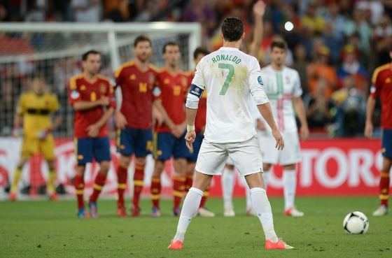

Goles
Conozcamos mejor sus tantos
Biografía
Trayectoria
Palmarés
Goles
Cris ha marcado más de 850 goles, todos diferentes:
De cabeza
Con la izquierda
Con la derecha
De falta
De penalti

PERO SIN DUDA EL MEJOR GOL ES EL QUE METIÓ VS JUVENTUS EN LOS CUARTOS DE FINAL DE LA CHAMPIONS 2017/2018